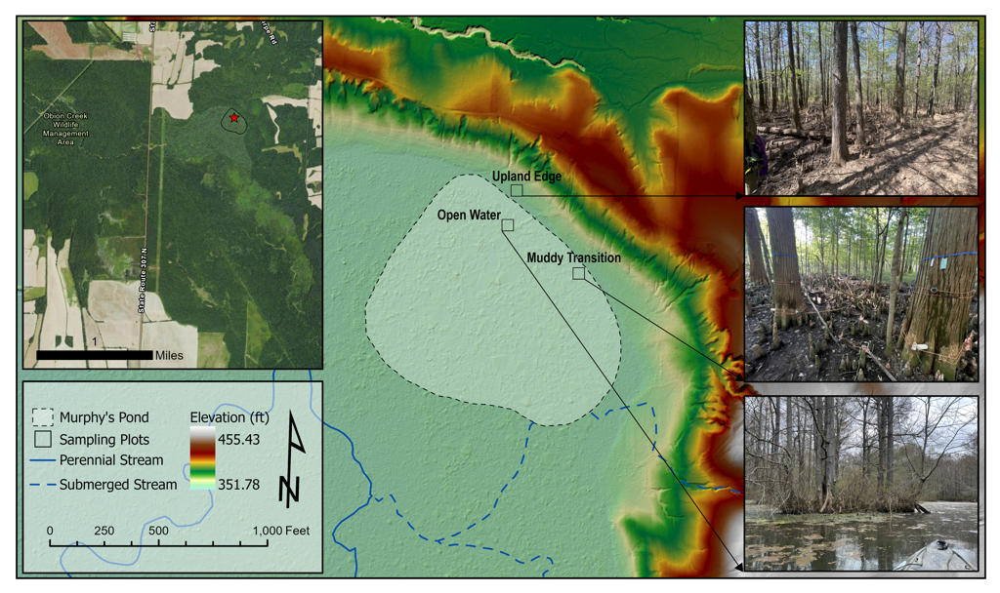
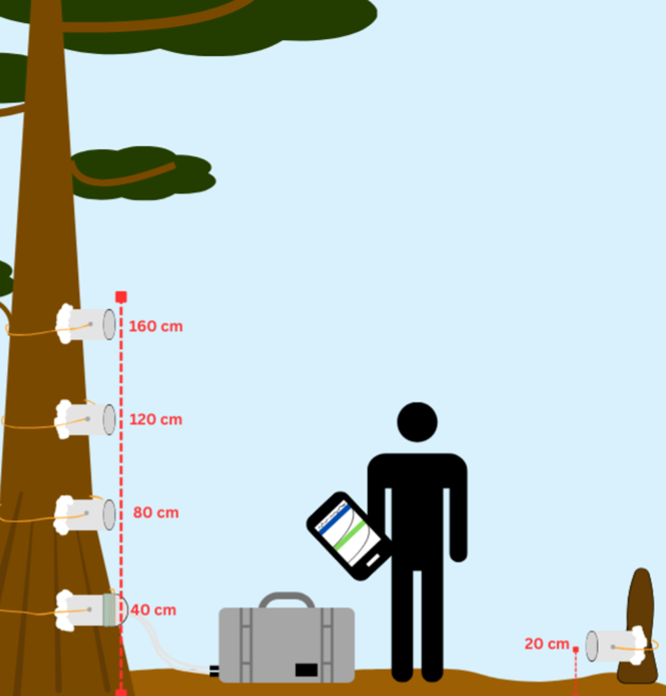
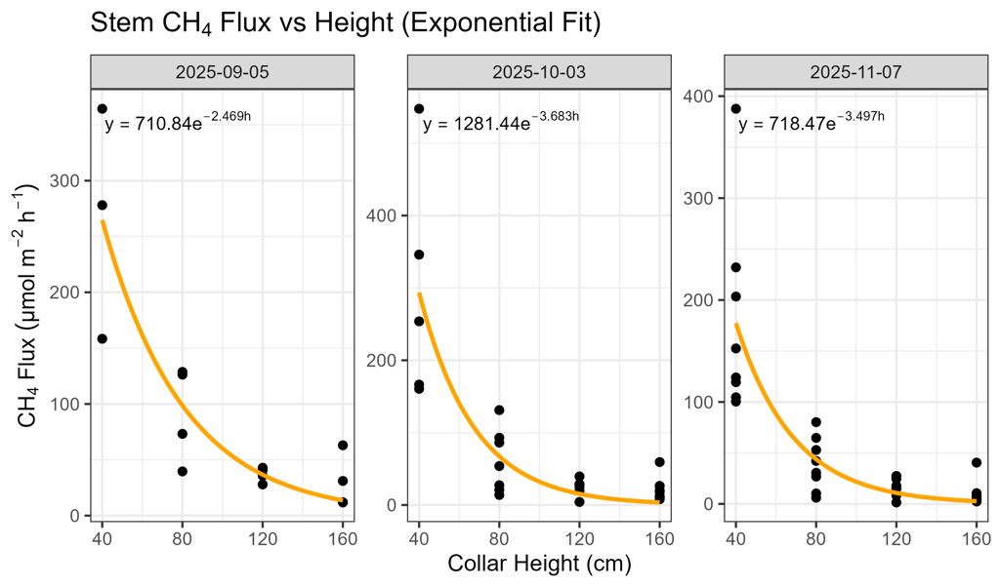
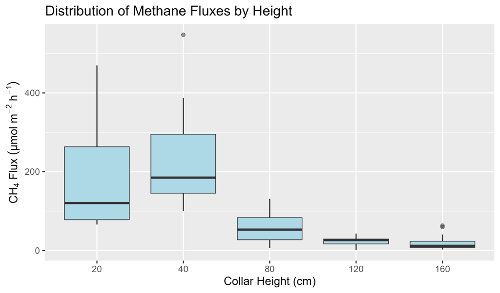
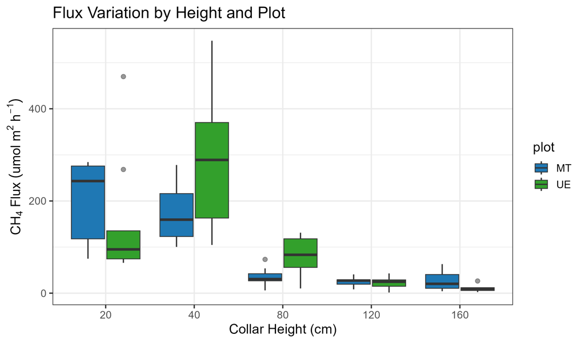

Project
Modeling Vertical Decay of Methane Flux Along Bald Cypress Stems
Abstract
Wetlands are major long-term carbon sinks, but they are also the largest natural source of atmospheric methane. In forested wetland systems, tree stems can act as methane transport pathways from saturated soils to the atmosphere, complicating efforts to quantify ecosystem-scale methane emissions. This project evaluated vertical patterns of stem-mediated methane flux in bald cypress (Taxodium distichum) at Murphy’s Pond, a bottomland hardwood wetland in western Kentucky.
Field measurements were collected during three fall 2025 sampling campaigns at two hydrologically distinct plots: Upland Edge (UE) and Muddy Transition (MT). Methane concentration measurements were collected using a LI-7810 CH₄/CO₂/H₂O trace gas analyzer connected to a LI-COR chamber system. Custom static collars were installed along bald cypress stems at 40, 80, 120, and 160 cm above the stem base. Field metadata and raw gas analyzer outputs were processed in R using the fluxible package to match chamber windows, fit concentration curves, apply quality control, and calculate methane fluxes.
Linear, log-linear, and exponential decay models were compared to characterize how methane flux changed with stem height. Across all sampling dates, stem methane flux declined sharply with height, with the strongest decrease occurring between 40 and 80 cm and fluxes tapering toward low values by 160 cm. The exponential model consistently provided the best fit based on AIC comparisons, indicating that stem-mediated methane emissions followed a nonlinear vertical decay pattern. Plot comparisons showed higher low-height fluxes at the Upland Edge plot than at the Muddy Transition plot, highlighting spatial heterogeneity in methane production and transport pathways within the wetland.
Project Details
Maps and Figures




